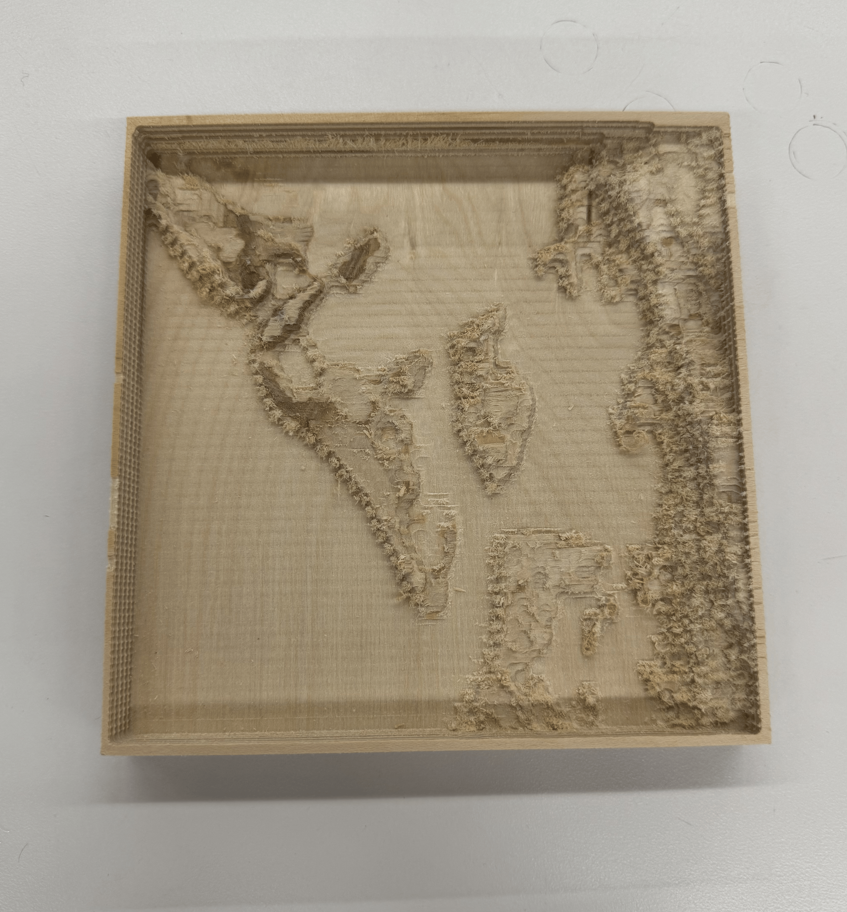
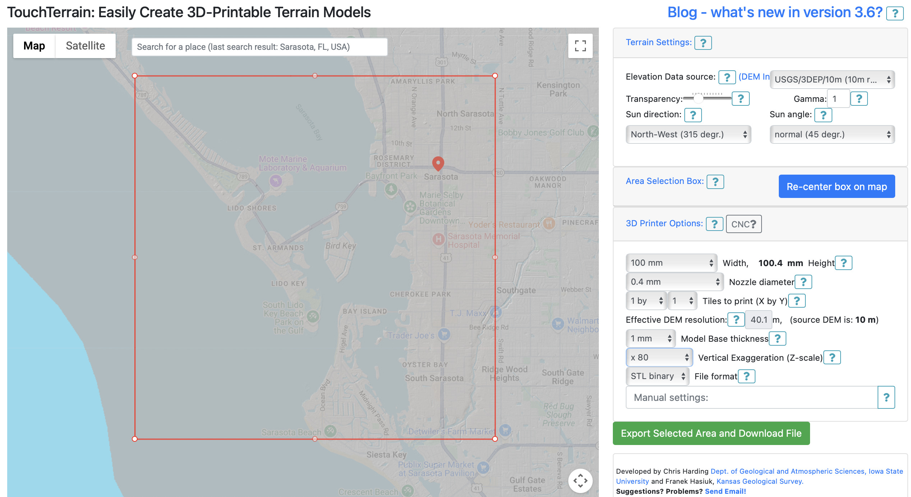
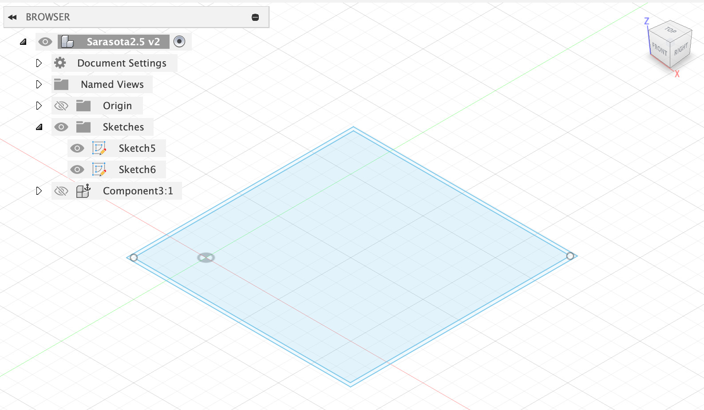
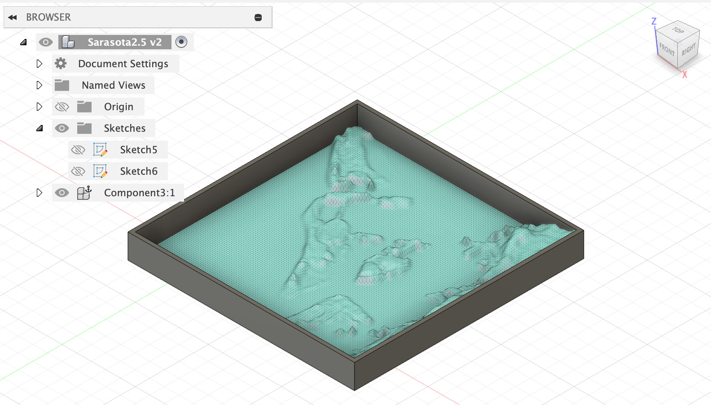
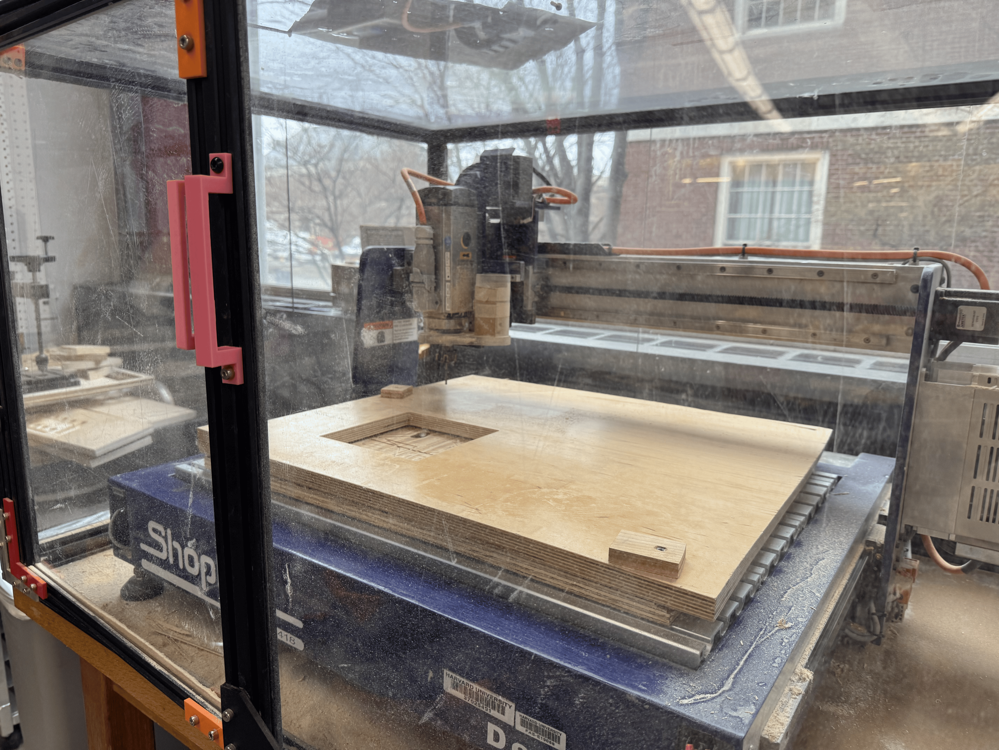
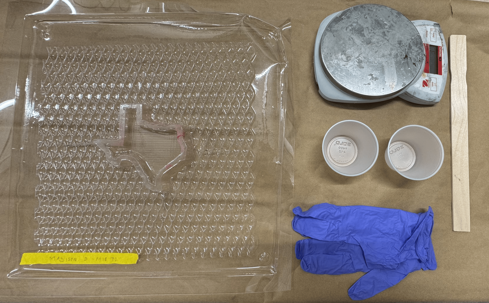
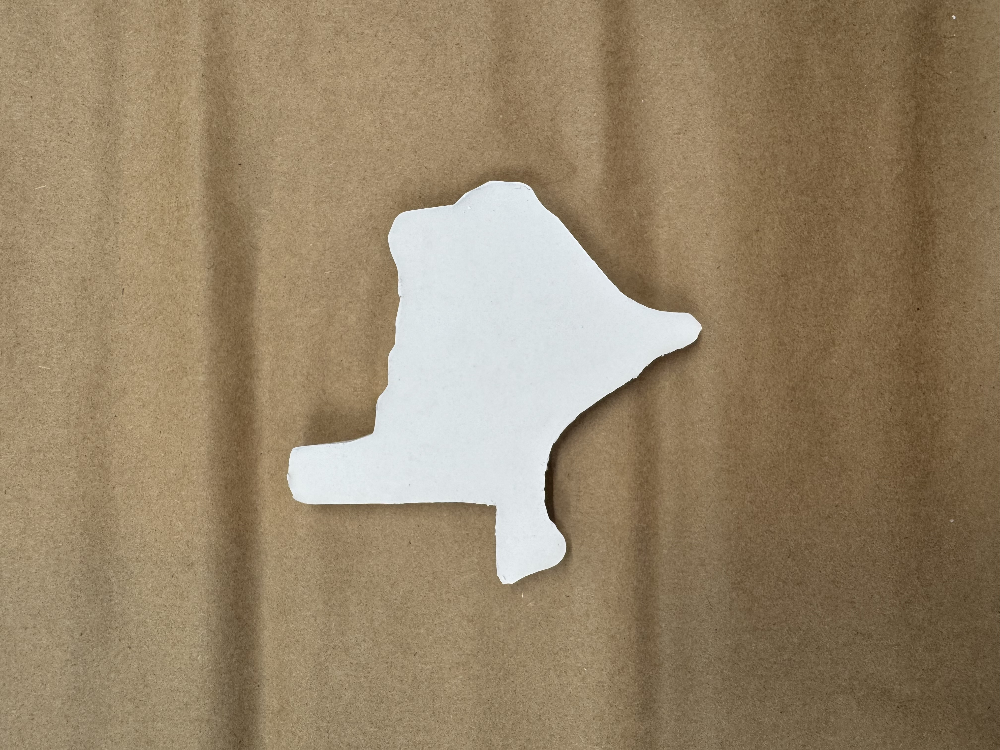
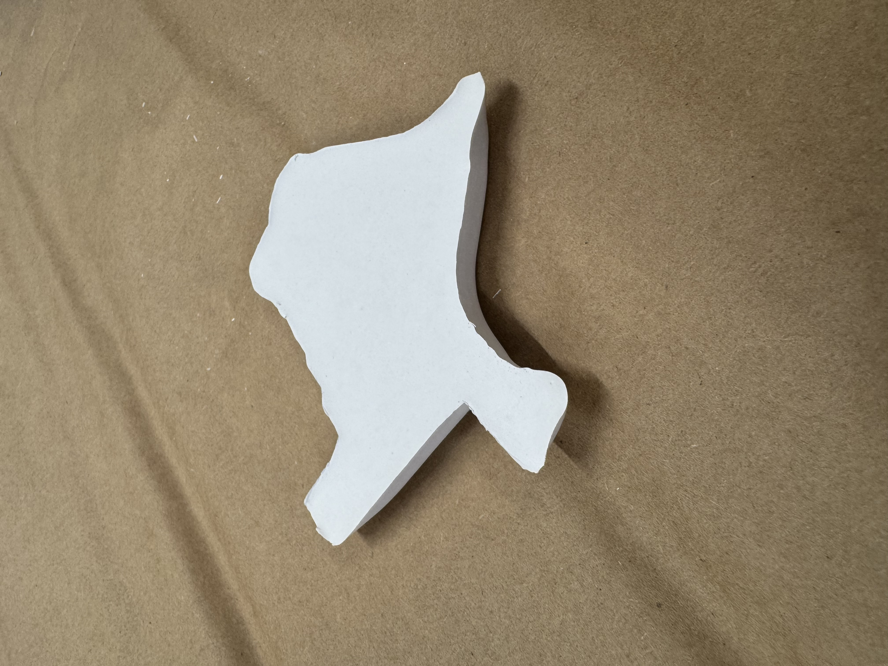

<div class="textcontainer">
<p class="margin"> </p>
<h3>Week 8: CNC Milling</h3>
<p><br></p>
<h4>Part 1: Make Something With CNC</h4>
We're asked to design something and make it using CNC.
I decided to make a framed wooden topography map of my hometown.
<p><br></p>
<p></p>
<p><br></p>
First, I went to <a href="https://touchterrain.geol.iastate.edu/main">this website</a>,
which allows you to get an STL download of any part in the world. Here are the steps you can do:
<p><br></p>
<p></p>
<p><br></p>
<o>
<li>In the 'Search for a place', put in your hometown</li>
<li>Click 'Recenter box on map' for a red square to load to your new coordinates</li>
<li>Move around the red square by clicking and dragging its edges. I would try to make it square</li>
<li>Optionally, choose the default or another dataset for the 'Elevation Data Source' button. It depends on the granularity level you want. I did the default USGS setting, which operates at 10m scale</li>
<li>Optionally, change the 'Vertical Exaggeration Scale'. Most of my area is flat, so I amped it up to 80x for it to show more topography.</li>
<li>When ready, click 'Export Selected Area'. It'll load a preview button and download button. The preview might not show up, so just download it to get a .zip file. Inside the .zip file is the STL you will use</li>
</o>
<p><br/></p>
Once this was done, I wanted to add sides. I pulled up Autodesk Fusion 360, made a new project, then imported my STL as a mesh. Here is what to do next:
<o>
<li>Adjust the scale of the mesh so that it was a reasonable size.</li>
<li>Make two sketches of squares based on the 2D top-down dimensions of the topography.</li>
<li>Extrude the outer sketch so it is high enough to just match with the highest part of your topography map.</li>
<li>Extrude the inner sketch as a 'Cut' so that the outer sketch acts like a frame.</li>
</o>
<p><br/></p>
For reference, here were my dimensions:
<p><br/></p>
<table class="myTable">
<tr><th>Name</th><th>Value (mm)</th>
<tr><td>frame width</td><td>2.5</td>
<tr><td>height</td><td>16.75</td>
<tr><td>width and length (approx.)</td><td>154.9</td>
</table>
<p><br/></p>
<div class="img-container">
<p></p>
<p></p>
</div>
<p><br/></p>
Once this is done, create a component out of the imported mesh and the frame extrusion. Export the component as an STL.
<p class="margin"> </p>
<div class="flexrow">
<a id="btn" href="./week8.zip" download>Download my STL File
</a>
</div>
<p class="margin"> </p>
The tool I used to actually CNC mill is called ShopBot. I first imported my STL file into Aspire software. This helped me
to verify the dimensions of my cut and where in the stock material my cut would take place. Specifically, Aspire has
red 3D lines to visualize the stock that I inserted (you specify its dimensions in software). I am using glossy plywood stock. Because my cut is smaller than
the stock (height-wise), I moved my frame's base to the bottom of the stock so that the base will not be super bulky.
<p><br/></p>
Then, I set different kinds of cuts and their respective end-mill sizes and strengths (based on the stock material). The first was a rough modeling cut
that allows us to get the general shapes of the topography. The second was a finer-tuned modeling cut to make the edges more detailed. The final
was a full cut-through of the frame edges so that I could take the piece out. I used an 0.125 inch end-mill for all cuts. The final cut
had a longer length because the stock was 20mm and so to cut it out with more force, I wanted a longer end-mill.
<p><br/></p>
Finally, time to move onto ShopBot software, where we set up our stock. I got help to insert large nails into the stock so it would not move.
We made pilot holes so the nail could go in easily after. We set up the origin (0,0,0) and used the paper test to verify the end-mill was close to the stock.
Finally, we did an air-test on the final cut sequence to ensure its cut was within the stock. After this, we were all good to go!
<p><br/></p>
<div class="img-container">
<img src="sar4.png">
<p></p>
</div>
<p><br/></p>
After vaccumming the area, we are left with our final result:
<p><br></p>
<p><br></p>
<h4>Part 2: Make Something With CNC</h4>
We were asked to post-process a design using fabrication processes such as molding and casting, vacuum forming, or composites. I did molding and casting on the
state of Texas because I have family there for a wedding coming up in Spring. Here are all the materials I used:
<o>
<li>2 cups</li>
<li>Scale</li>
<li>Plastic-Vaccumed Texas</li>
<li>Gloves</li>
<li>Mixer Stick (just any stick will do)</li>
<li>Carboard sheet to catch any residue</li>
<li>Water</li>
<li>DryStone casting material</li>
</o>
<p><br></p>
<p></p>
<p><br></p>
The drystone material requires 100 parts of it to 20 parts water. The instructions say to
specifically add powder to water. Here were my steps and a timelapse:
<o>
<li>I tared the cups and added water and material until they were 20g and 100g, respectively.</li>
<li>I slowly added powder to the water, mixing continuously. Towards the end, it got a bit thick, but it was still liquidy.</li>
<li>I poured the mixture into the mold. If there were air bubbles, I used my stick to pop them so they would burst.</li>
</o>
<p><br></p>
<div class="video-container">
<video controls>
<source src="texas2.mp4" type="video/mp4">
Your browser does not support the video tag.
</video>
</div>
<p><br></p>
After the steps were done, I let it sit overnight. I came back, and here was the result!
<p><br></p>
<div class="img-container">
<p></p>
<p></p>
</div>
<p><br></p>
<h4>Added Part: Final Project</h4>
I worked on my final project a bit more in anticipation of the upcoming review lab sessions. Here is what I did. I replaced some of the wires with socket ends so that I could transition some parts off of the breadboard (MPU, ESP32). Only the power wires, GND wires, and LED circuit remain attached to the breadboard now.</li>
I also tweaked the code so that:
<o>
<li>The receiver LED stays on or off indefinitely after a swish of the wand instead of immediately going on then off</li>
<li>The threshold for whether we turn the light on or off is determined by a delta/change between the previous message data on x-axis acceleration and the currently coming-in data.</li>
<li>I introduced a new timing structure to help with consistency of output, where if we detect a delta change big enough, we wait to read in other values for a certain set duration so that it does not pick up on the following vibrations of the wand and mistake it for another swish.</li>
</o>
Here is the updated receiver code:
<p><br></p>
<div class="code-box">
<pre><code class="language-arduino">
// PHYS 70 Receiver Microcontroller
// Imports and Installs
#include esp_now.h
#include WiFi.h
// Variables
int ledPin = 23;
typedef struct struct_message {
float a;
float b;
float c;
} struct_message;
struct_message myData;
// Callbacks
void OnDataRecv(const uint8_t * mac, const uint8_t *incomingData, int len) {
memcpy(&myData, incomingData, sizeof(myData));
Serial.print("Received: ");
Serial.println(myData.a);
if (myData.a > 8) {
Serial.println("Low");
digitalWrite(ledPin, LOW);
} else {
Serial.println("High");
digitalWrite(ledPin, HIGH);
}
}
// Function: Setup
void setup() {
// Initialize Serial
Serial.begin(115200);
// Initialize ledPin, WiFi
pinMode(ledPin, OUTPUT);
WiFi.mode(WIFI_STA);
// Initialize ESP-NOW
if (esp_now_init() != ESP_OK) {
Serial.println("Error initializing ESP-NOW");
return;
}
// Initialize Callback
esp_now_register_recv_cb(esp_now_recv_cb_t(OnDataRecv));
}
// Function: Loop
void loop() {
}
</code></pre>
</div>
<p><br></p>
<p><br/></p>
</div>